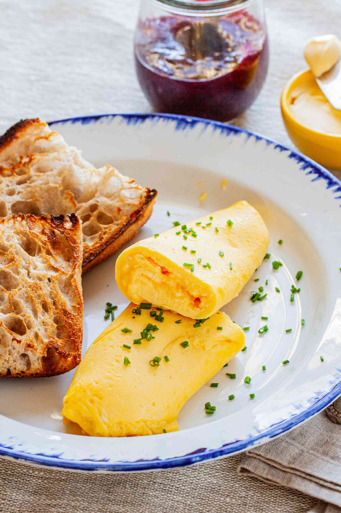

French Omelette

Description
A beautiful breakfast dish which allow you to experience how sometimes
simplicity is the perfect answer. One of the best ways to make eggs - both
structure-wise and taste-wise. Takes some training to achieve perfection,
but it is definitely worth learning. Just one ingredient made with love.
Ingredients
- 2 eggs
- tablespoon of butter
- salt to taste
- chives (optional)
Steps
- whisk the eggs in a bowl and add salt
- start melting the butter in a pan on a low heat
-
add the eggs and mix them rapidly until the eggs are shiny, but not
runny
-
fold the omelette using spatula one part a time, then flip it gently on
a plate